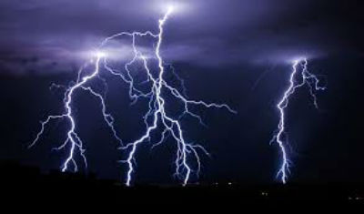
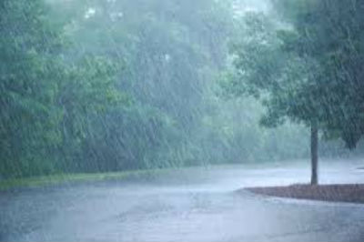
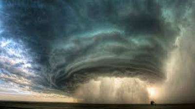
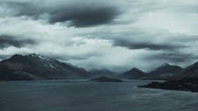

Lightning - The occurrence of a natural electrical discharge of very short duration and high voltage between a cloud and the ground or within a cloud, accompanied by a bright flash and typically also thunder.Snow - Atmospheric water vapor frozen into ice crystals and falling in light white flakes or lying on the ground as a white layeRain - Moisture condensed from the atmosphere that falls visibly in separate drops.Tornado - A mobile, destructive vortex of violently rotating winds having the appearance of a funnel-shaped cloud and advancing beneath a large storm system.Sun - Exposed to, brightened by, or warmed by the sunClouds - A visible mass of condensed water vapor floating in the atmosphere, typically high above the ground.